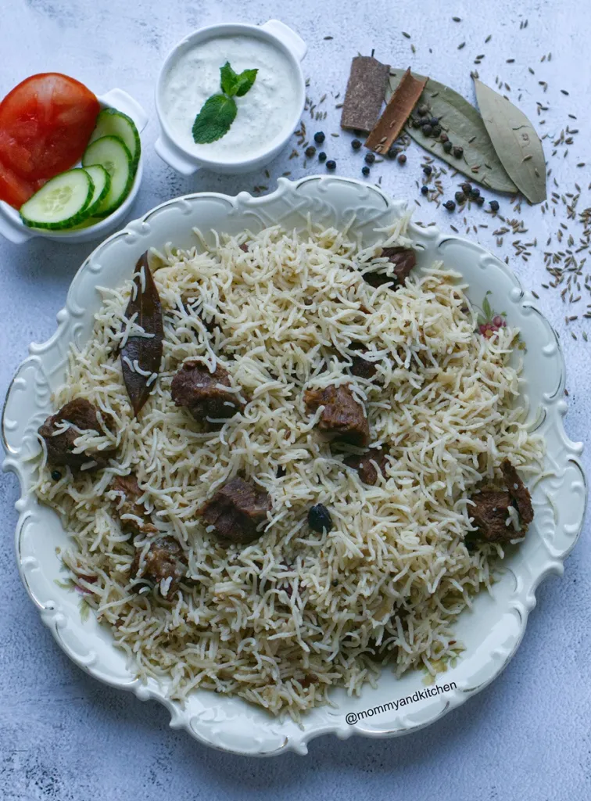
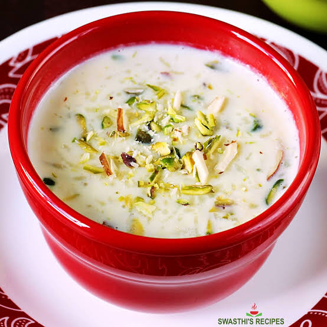

Our Recipes
CHICKEN KARAHI
Chicken Karahi (also known as kadai chicken) is one of the most popular and iconic dishes in Pakistani and North Indian cuisine. It is named after the karahi—a heavy, deep, circular cooking pot similar to a wok that is traditionally used to prepare it over high heat.

Ingredients
- Chicken: 1 kg (bone-in, washed)
- Tomatoes: 5-6 medium (cut in half lengthwise)
- Yogurt: 1 cup (whisked)
- Cooking Oil or Ghee: 1/2 cup
- Ginger-Garlic Paste: 1 tablespoon
- Black Pepper: 1 tablespoon (freshly coarsely ground)
- Cumin Seeds & Coriander Seeds: 1 tablespoon each (roughly crushed)
- Salt: To taste
- Green Chilies & Ginger: For garnish (sliced)
CHICKEN KARAHI COOKING STEPS
Step 1: Fry the Chicken and Ginger-Garlic
- In a traditional karahi or heavy-bottomed pot, heat the cooking oil or ghee over medium-high heat.
- Add the washed chicken pieces and the ginger-garlic paste to the hot oil.
- Fry the chicken on high heat for about 6 to 8 minutes until the meat changes color completely and turns golden-white, and the raw smell of the ginger-garlic disappears.
Step 2: Add Tomatoes and Soften
- Reduce the heat slightly and place the medium tomatoes cut-side down directly over the chicken.
- Cover the karahi with a lid and let it steam on medium heat for about 5 to 7 minutes so the tomato skins soften.
- Remove the lid and use a pair of tongs to easily peel off and discard the softened tomato skins from the pot.
- Mash the remaining tomato flesh into the chicken and oil using your cooking spoon.
Step 3: Add Spices and Yogurt
- Add the freshly coarsely ground black pepper, roughly crushed cumin seeds and coriander seeds, and salt to taste into the karahi.
- Sauté the mixture well on high heat for 3 to 4 minutes so the spices release their aroma into the chicken.
- Lower the heat and whisk in 1 cup of yogurt gradually, stirring continuously so it does not curdle.
- Cook on medium heat until the yogurt water dries up and the oil starts separating clearly from the masala gravy.
Step 4: Garnish and Serve
- Turn off the heat once the desired gravy consistency is reached and the chicken is fully tender.
- Garnish the hot Chicken Karahi generously with sliced green chilies and fresh julienned ginger.
- Serve hot directly from the karahi with freshly baked naans or tandoori roti.
BEEF PULAO

A classic, fragrant Pakistani rice dish made with tender beef, rich stock (yakhni), and aromatic whole spices.
1. For the Yakhni (Stock):
- Beef: 1 kg (bone-in beef works best for pulao)
- Onion: 1 medium (cut into 4 pieces)
- Garlic: 1 whole bulb (cleaned)
- Ginger: 1 large piece (sliced)
- Whole Spices (Sabut Garam Masala): 1 tbsp Fennel seeds (Saunf), 1 tbsp Coriander seeds (Sabut Dhaniya), 3-4 Whole red chilies (optional), 3 Black cardamoms, 4-5 Green cardamoms, 6-7 Cloves, 10-12 Black peppercorns, 2 Cinnamon sticks, 1 Star anise, 2 Bay leaves
- Salt: To taste (approx. 1.5 tbsp)
- Water: 5 to 6 glasses
2. For the Pulao Tarka / Cooking:
- Rice: 3 glasses (Sella or Basmati, soaked for at least 30 minutes)
- Onions: 2 medium (thinly sliced length-wise)
- Tomatoes: 2 medium (chopped)
- Yogurt (Dahi): ½ cup (whisked)
- Ginger-Garlic Paste: 2 tbsp
- Green Chilies: 6-8 (whole or slightly slit)
- Garam Masala Powder: 1 tsp
- Ghee or Cooking Oil: A little more than ½ cup
- Water/Yakhni: Measured according to rice (If using 3 glasses of rice, the total liquid—yakhni plus water—should be around 5 to 5.5 glasses)
Step-by-Step Instructions
Step 1: Prepare the Yakhni (Stock)
- In a large pressure cooker or pot, add the beef, water, and all the stock ingredients (onion, garlic, ginger, fennel seeds, coriander seeds, and whole spices).
- Cook on medium heat until the beef is tender (about 20-25 minutes in a pressure cooker, or 1 to 1.5 hours in a regular pot).
- Strain the stock, keeping the liquid separate from the beef. Discard the spent whole spices and onion/garlic remnants (you can squeeze the softened garlic cloves out of their skins and mix the pulp into the stock if you like). Set the tender beef aside.
Step 2: Cook the Masala and Beef
- In a large pot, heat the ghee or oil and fry the sliced onions until golden brown (remove a small handful of fried onions for garnishing later).
- Add the ginger-garlic paste and sauté for 1-2 minutes until the raw smell disappears.
- Add the boiled beef to the pot and fry it on high heat for 5-7 minutes to give the meat a nice roasted flavor.
- Add the chopped tomatoes, whisked yogurt, and green chilies. Cook and stir until the oil separates from the masala and the tomatoes soften completely.
Step 3: Add Rice and Stock
- Measure the strained yakhni. If it is less than 3 glasses, add extra water to make the total liquid around 5 to 5.5 glasses.
- Pour this liquid into the pot and bring it to a boil. Check the salt (the yakhni should taste slightly salty so the rice absorbs it well).
- Drain the soaked rice and add it to the boiling liquid. Stir gently.
- Let it cook on medium heat until most of the water is absorbed and bubbles begin to form on the surface of the rice.
Step 4: Dum (Simmer/Steam)
- When the water level drops just below the rice, reduce the heat to the absolute lowest setting (dum).
- Sprinkle the reserved brown onions and a pinch of garam masala powder on top.
- Cover the pot tightly with a clean cloth or foil paper under the lid and let it steam for 10 to 12 minutes.

TRADITIONAL PAKISTANI KHEER
Kheer is a rich, creamy, and traditional rice pudding made by slow-cooking rice, milk, and sugar, and flavoring it with cardamom, kewra water, and chopped nuts. It is an essential dessert at every celebration in Pakistan.
Ingredients
- Full-Fat Milk: 1.5 to 2 liters (fresh milk works best for richness)
- Basmati Rice: 1/4 cup (washed and soaked for 30 minutes, then coarsely blended or broken)
- Sugar: 1/2 cup to 3/4 cup (adjust according to taste)
- Green Cardamom Powder: 1/2 teaspoon (or 4-5 crushed green cardamom pods)
- Chaud/Mixed Nuts: 2 tablespoons each of sliced almonds and pistachios
- Kewra Water: 1 teaspoon (for aroma)
- Silver Leaf (Chandi Warq): Optional for garnishing
Step-by-Step Instructions
Step 1: Prepare and Cook the Rice in Milk
- Drain the soaked and coarsely blended rice completely.
- In a heavy-bottomed deep pot or a traditional metal patila, bring the full-fat milk to a gentle boil over medium heat.
- Add the broken rice into the boiling milk, reducing the heat to low-medium.
- Stir frequently with a wooden spoon to prevent the milk and rice from sticking to the bottom of the pot.
Step 2: Slow Cook and Thicken
- Let the mixture simmer on low heat for about 45 to 60 minutes, stirring occasionally.
- As it cooks, the rice will soften completely and melt into the milk, and the milk will reduce to a thick, creamy consistency. Scrape the creamy layers off the sides of the pot and mix them back in.
Step 3: Add Sugar and Flavorings
- Once the kheer has thickened significantly, add the sugar, green cardamom powder, and half of the chopped almonds and pistachios.
- Stir continuously for another 10 to 15 minutes until the sugar dissolves completely and the kheer achieves a rich, thick texture.
- Turn off the heat and stir in the kewra water for that authentic traditional aroma.
Step 4: Garnish and Chill
- Transfer the kheer into a serving bowl or individual clay plates (saba/matka style).
- Garnish the top generously with the remaining sliced almonds, pistachios, and silver leaf if desired.
- Let it cool to room temperature, then place it in the refrigerator to chill for at least 2 to 3 hours before serving cold.
CRISPY ZINGER BURGER
A crispy, juicy, and spicy fried chicken burger inspired by fast-food favorites. It features an extra-crunchy chicken fillet loaded with lettuce and mayo inside a soft burger bun.
Ingredients
- Chicken Breast Fillets: 4 pieces (flattened slightly)
- Burger Buns: 4
- Iceberg Lettuce: Shredded as needed
- Mayonnaise: 4-5 tablespoons (for spreading)
- Cooking Oil: For deep frying
For the Marinade:
- Buttermilk or Milk mixed with 1 tbsp Vinegar: 1 cup
- Hot Sauce or Chili Garlic Sauce: 2 tablespoons
- Red Chili Powder: 1 teaspoon
- Black Pepper Powder: 1/2 teaspoon
- Salt: 1 teaspoon
- Garlic Powder: 1 teaspoon
For the Dry Coating:
- All-Purpose Flour (Maida): 2 cups
- Cornstarch (Cornflour): 4 tablespoons (for extra crunch)
- Baking Powder: 1/2 teaspoon
- Paprika or Red Chili Powder: 1 teaspoon
- Salt & Black Pepper: To taste
- Ice Water Bowl: 1 bowl (for the double-dip technique)
Step-by-Step Instructions
Step 1: Marinate the Chicken
- In a bowl, combine buttermilk, hot sauce, red chili powder, black pepper, garlic powder, and salt.
- Place the chicken breast fillets into the marinade, ensuring they are fully submerged.
- Cover and refrigerate for at least 2 to 4 hours (or overnight for the best juicy flavor).
Step 2: Prepare the Flour Coating
- In a large, wide bowl, mix the all-purpose flour, cornstarch, baking powder, paprika, salt, and black pepper thoroughly.
- Keep a separate bowl filled with cold water and ice cubes right next to your flour mixture.
Step 3: Bread the Fillets (The Craggy Technique)
- Take a piece of marinated chicken, let any excess liquid drip off, and dredge it thoroughly in the dry flour mixture, pressing it down firmly.
- Dip the floured chicken quickly into the bowl of ice water for 2 to 3 seconds.
- Take it out, let the water drip off, and coat it in the dry flour mixture a second time, pressing hard to create those signature crispy, rough flakes (crumbs) on the surface.
Step 4: Fry to Golden Perfection
- Heat enough cooking oil in a deep frying pan or kadai over medium heat (the oil should be hot, but not smoking hot so the chicken cooks through without burning the crust).
- Carefully drop the coated fillets into the hot oil one by one.
- Fry on medium heat for about 7 to 9 minutes until the crust turns golden brown, ultra-crispy, and the chicken is fully cooked inside. Remove and place on a wire rack or paper towel.
Step 5: Assemble the Zinger Burgers
- Lightly toast the inside of the burger buns on a warm pan or griddle.
- Spread a generous amount of mayonnaise on both the top and bottom halves of each bun.
- Place a handful of freshly shredded iceberg lettuce on the bottom bun.
- Place the hot, crispy fried chicken fillet right on top of the lettuce.
- Cover with the top bun and press down gently. Serve hot with french fries and ketchup!